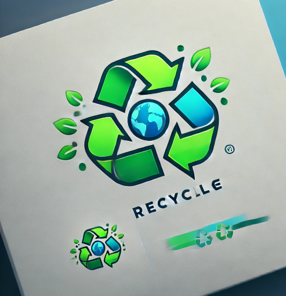

<div class="sticky top-0 z-50 bg-gray-500 shadow-md">
  <div class="mx-auto max-w-7xl px-2 sm:px-6 lg:px-8">
    <div class="relative flex h-16 items-center justify-between">
      <!-- Mobile Menu Button -->
      <div class="absolute inset-y-0 left-0 flex items-center sm:hidden z-10">
        <button type="button" class="relative inline-flex items-center justify-center rounded-md p-2 text-green-100 hover:bg-green-800 hover:text-white focus:outline-none focus:ring-2 focus:ring-inset focus:ring-green-400" aria-controls="mobile-menu" aria-expanded="false" (click)="toggleMobileMenu()">
          <span class="absolute -inset-0.5"></span>
          <span class="sr-only">Open main menu</span>
          <svg *ngIf="!isMobileMenuOpen" class="block h-6 w-6" fill="none" viewBox="0 0 24 24" stroke-width="1.5" stroke="currentColor" aria-hidden="true">
            <path stroke-linecap="round" stroke-linejoin="round" d="M3.75 6.75h16.5M3.75 12h16.5m-16.5 5.25h16.5" />
          </svg>
          <svg *ngIf="isMobileMenuOpen" class="block h-6 w-6" fill="none" viewBox="0 0 24 24" stroke-width="1.5" stroke="currentColor" aria-hidden="true">
            <path stroke-linecap="round" stroke-linejoin="round" d="M6 18L18 6M6 6l12 12" />
          </svg>
        </button>
      </div>

      <!-- Logo -->
      <div class="flex shrink-0 items-center sm:justify-center w-full sm:w-auto">
        
        <h1 class="text-2xl font-bold text-transparent bg-clip-text bg-gradient-to-r from-green-400 via-green-500 to-green-600 uppercase tracking-wider">
          Recycle
        </h1>      </div>

      <!-- Desktop Menu -->
      <div class="hidden sm:flex sm:ml-6 sm:block sm:space-x-4 sm:items-center sm:justify-center">
        <a routerLink="/" routerLinkActive="border-b-4 border-green-700" [routerLinkActiveOptions]="{ exact: true }" class="rounded-md px-3 py-2 text-sm font-medium text-green-200 hover:bg-green-800 hover:text-white" aria-current="page">Home</a>
        <a routerLink="/store" routerLinkActive="border-b-4 border-green-700" [routerLinkActiveOptions]="{ exact: false }" class="rounded-md px-3 py-2 text-sm font-medium text-green-200 hover:bg-green-800 hover:text-white">Store</a>
        <a routerLink="/about" routerLinkActive="border-b-4 border-green-700" [routerLinkActiveOptions]="{ exact: false }" class="rounded-md px-3 py-2 text-sm font-medium text-green-200 hover:bg-green-800 hover:text-white">About us</a>
      </div>

      <!-- Login Link -->
      <div class="absolute inset-y-0 right-0 flex items-center pr-2 sm:static sm:inset-auto sm:ml-6 sm:pr-0 z-10">
        <div class="py-6">
          <a routerLink="/login" class="-mx-3 block rounded-lg px-3 py-2.5 text-base font-semibold text-green-200 hover:bg-green-800 hover:text-white">
            Log in <fa-icon [icon]="faArrowRight"></fa-icon>
          </a>
        </div>
      </div>
    </div>
  </div>

  <!-- Mobile Menu -->
  <div *ngIf="isMobileMenuOpen" class="sm:hidden" id="mobile-menu">
    <div class="space-y-1 px-2 pb-3 pt-2">
      <a routerLink="/" routerLinkActive="bg-green-900 text-white" [routerLinkActiveOptions]="{ exact: true }" class="block rounded-md px-3 py-2 text-base font-medium text-green-200 hover:bg-green-800 hover:text-white">Home</a>
      <a routerLink="/store" routerLinkActive="bg-green-900 text-white" [routerLinkActiveOptions]="{ exact: false }" class="block rounded-md px-3 py-2 text-base font-medium text-green-200 hover:bg-green-800 hover:text-white">Store</a>
      <a routerLink="/about" routerLinkActive="bg-green-900 text-white" [routerLinkActiveOptions]="{ exact: false }" class="block rounded-md px-3 py-2 text-base font-medium text-green-200 hover:bg-green-800 hover:text-white">About us</a>
    </div>
  </div>
</div>
